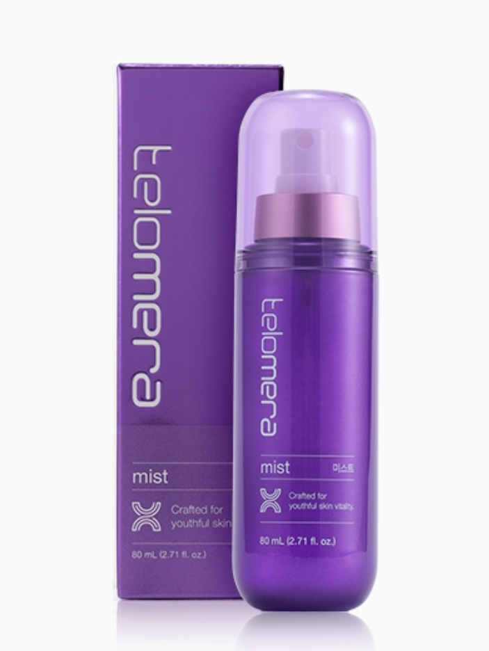

텔로메라 미스트
텔로미어 루틴을 언제든 이어주는 안티에이징 미스트
- 회원가입 없이 회원가
- 지쿱 본사 정품 직접 발송
- 5만 원 이상 무료배송
🎬 제품 영상 3개를 영샵 상세페이지에서 볼 수 있어요.
텔로메라 미스트 상세 설명 · 원료와 특징
먹고, 바르다
세포의 시간 되돌리다
노화는 단지 피부 겉에서 시작되지 않습니다.
세포 속 텔로미어가 점점 짧아지면서 진짜 노화는 그때부터 시작됩니다.
텔로메라(Telomera)는 이 근본적인 노화 메커니즘에 주목하여 시간을 되돌리는 리버스 에이징 루틴을 제안합니다.
두 가지 방식, 하나의 해답 노화 세포를 활성화 어떻게 가능할까요?
압도적 기술 우의 독자 복합 원료 핵심 매커니즘 에필탈론 구실사리추출물 이 원료를 인체에 적용시키면 엑소좀 매커니즘이 딜리버리 시스템을 통해 노화세포에 안착 독자 개발 핵심 성분이 노화세포를 깨워 새로운 콜라겐과 단백질을 생성 세포를 초기화 하여 속안 부터 겉피부 까지 최종 안티에이징 효과가 없으셨던 이유 함량이 높아도 피부 속 깊이 전달하지 않으면 결국, 피부 겉에만 남아 있다 사라질 뿐입니다
전달 기술이 높은 엑소좀 매커니즘 침투 기술이 없는 일반 성분 “피부 노화는 세포부터 관리 해야 한다는 것” 피부 겉에서만 도는 성분으로는 피부관리가 힘들어요
세포 속부터 관리해야 피부 역주행을 할수 있죠 초미세 안개 흡수로 지속적인 안티에이징 미스트 텔로메라 미스트 #피부 노화 방어 #미세 안개 흡수 #화장 뭉침 제로 텔로메라만의 안티에이징 코드 텔로미어 과학에 기반해 피부 시간을 되돌리는 안티에이징 루틴 완성 언제 어디서나 생기 어린 피부케어 독자적인 GK Complex™로 단순 수분 공급을 넘어, 하루 종일 생기 있고 촉촉하게 빛나는 피부 선사
엑소좀 기술의 초미세 안개분사 수분 밀착 흡수를 돕는 기술력으로 피부(각질층)에 산뜻하게 밀착되어, 번들거림 없이 메이크업 전후 멀티 사용 가능 은은한 윤기 보습막 & 저자극 안심 케어 식물 유래 오일 성분이 부드러운 보습 레이어를 형성하여 자연스러운 광채를 선사하고 피부 자극 테스트 완료로 안심 사용 메이크업 위에도 부담 없이 사용 가능한 초미세 바이오 미스트 피부에 닿자마자 미세하게 스며드는 무중력 사용감, 수분 충전과 동시에
메이크업의 고밀착 유지에 도움 단순 수분 미스트를 뛰어넘는 프리미엄 솔루션 안티에이징 케어, 피부 에너지케어, 피부 장벽케어, 피부 보습 케어, 피부 자연광채를 한번에 피부 자극 테스트 완료 노화 완화 임상 진행중 주름, 탄력, 보습, 치밀도, 피부톤 독자 복합 원료 핵심 안티에이징 원료 GK Complex™, NMN/NR, NAD, 에필탈론, 구실사리추출물, 삼뿌리엑소좀, 삼줄기엑소좀 흡수율을 높인 병풀 유래 성분으로
텔로미어 활성 + 피부 진정 케어 세포 활력과 재생을 위한 안티에이징 핵심 성분 에피탈론 노화 유전자 활성에 주목한 핵심 펩타이드 구실사리추출물, 삼뿌리엑소좀, 삼줄기엑소좀 피부 노화 방지 및 피부 주름 개선 텔로미어 보호 효과 * 원료적 특성에 한함 세포의 빗장을 여는 '엑소좀' 의 마법 미세 사이즈 엑소좀 메커니즘이 딜리버리 시스템을 통해 노화세포에 안착 GB 엑소좀 평균 모공 지름 미세 입자 공법으로 번들거림 없이
피부 속광을 풍부하게 피부에 얇고 균일하게 밀착되는 미세 분사 포뮬러가 촉촉한 윤기를 더해, 번들거림 없이 자연스럽게 빛나는 피부를 연출합니다
기존 자사 제품 오일 입자로 피부 세포속까지 전달 안됨 건조함, 번들거림 미세 입자와 리포좀으로 피부 세포속까지 흡수됨 수분전달 번들거림 피부 겉만 번들 거리지 않고, 번들거림 없이 피부 속 광을 자연스럽게 채워 줍니다.
메이크업 위에도 부담 없이 사용 가능한 초미세 바이오 미스트 무중력처럼 가벼운 초미세 분사.
피부를 섬세하게 감싸는 촉촉한 사용감으로 메이크업 위에도 부담 없이 사용할 수 있으며, 더욱 매끄럽고 자연스러운 피부 표현을 완성합니다.
세포 노화 메커니즘 차단 및 생기 충전 단순한 진정과 보습을 넘어, 피부 생체 메커니즘을 근본적으로 케어하는 독자적인 Cellular Anti-Aging System을 실현합니다.
세포 항노화 체계 강화 피부 스킨 에너지 케어 하이프로틴8, 펩다이드4종, 아미노산콤플렉스, 구실사리 추출물, 삼줄기&삼뿌리 추출물, 베리콤플렉스 노화 진행 매커니즘 차단 에피탈론, 유비퀴논, 스퍼미딘, 하이드로 레시틴 피부 스킨 리커버리 케어 베타인, 판테놀, 세라마이드, 3중 히알루론산 (고·중·저분자), 목련 추출물 피부 시간을 되돌리는 안티에이징 루틴 미스트 세안 후 워터 타입으로 피부결 정돈
부스터 세럼 영양 + 광채 집중 케어 크림 고밀도 리프팅 보습으로 탄탄한 마무리 임상 및 인증 피부 민감자극 테스트 완료 SMCTC(세명대학교 피부화장품임상센터) 피부 자극 테스트 완료, 피부 시간을 되돌리는 안티에이징 루틴 피부 윤기(광채) 개선효과 피부 치밀도 텔로 메라 미스트 사용 루틴 미스트 사용 방법 STEP 1 단독 사용법 얼굴에서 20cm 거리로 분사, 눈을 감고 고르게 분사.
필요 시 수시 사용, 메이크업 전·후 모두 가능 STEP 2 라인업 결합 사용 미스트 → 부스터 → 세럼 → 크림 순서로 사용.
미스트가 다음 단계 제품 흡수를 도와주는 연결 고리 역할 STEP 3 사용 시점 아침/저녁 스킨케어 시작 시, 오후 건조/칙칙함 리부트, 메이크업 위에도 부담 없이 사용 가능 추천 사용 상황 아침 - 스킨케어 세안 후 첫 단계로 사용하여 피부 각질을 정돈하고 다음 단계제품 흡수를 도와줌 오후 - 리프레시 오후 건조함이나 칙칙함이 느껴질 때 즉각적인 피부 리프레시와 광채 표현 저녁 클렌징 후 피부 진정 및 에너지 공급, 수분 보충과 함께
피부 컨디션 회복 TIP : 메이크업 위에도 부담 없이 사용 가능한 초미세 바이오 미스트 세포 시간을 깨우는 안티에이징 미스트 먹고, 바르다. 세포의 시간을 되돌리다.
노화는 단지 피부 겉에서 시작되지 않습니다. 세포 속 텔로미어가 점점 짧아지면서 진짜 노화는 그때부터 시작됩니다. 텔로메라(Telomera)는 이 근본적인 노화 메커니즘에 주목하여
지쿱 본사 제품 상세페이지 내용을 옮겨 정리했어요.
상품정보제공고시
| 품명 | 텔로메라 미스트 |
|---|---|
| 용량 | 80 mL (2.71 fl. oz.) |
| 사용기간 | 제조일로부터 36개월 |
| 사용방법 | 세안 직후 제품을 상하로 3~5회 충분히 섞이게 한 뒤, 고개를 살짝 든 상태에서 10~20cm 떨어져 눈을 감고 얼굴 전체에 4~5회 고르게 분사한 뒤 가볍게 두드려 피부에 흡수시켜 줍니다. |
| 화장품 제조업자 및 화장품 책임 판매 업자 | 제너럴바이오㈜ |
| 제조국 | 대한민국 |
| 전성분 | 정제수, 1,2-헥산다이올, 부틸렌글라이콜, 글리세린, 나이아신아마이드, 다이프로필렌글라이콜, 카프릴릭/카프릭트라이글리세라이드, 하이드록시아세토페논, 글리세레스-25피씨에이아이소스테아레이트, 세테아릴에틸헥사노에이트, 하이드로제네이티드폴리아이소부텐, 판테놀, 다이포타슘글리시리제이트, 테트라소듐이디티에이, 알란토인, 아데노신, 베르가모트잎추출물, 구실사리추출물, 카프릴릴글라이콜, 해바라기씨오일, 아르간커넬오일, 올리브오일, 시트릭애씨드, 삼줄기추출물, 삼뿌리추출물, 멕시칸주니퍼오일, 나이아신아마이드리보사이드클로라이드, 니코틴아마이드모노뉴클레오타이드, 니코틴아마이드아데닌다이뉴클레오타이드, 스퍼미딘에이치씨엘, 윈터체리뿌리추출물, 시카카이열매추출물, 님잎추출물, 인디안구스베리열매추출물, 하수오뿌리추출물, 약모밀추출물, 울금뿌리추출물, 병풀추출물, 토코페롤, 세라마이드엔피, 칸디다/가르시니아발효물, 마카다미아씨오일, 폴리글리세릴-10스테아레이트, 시트로넬라오일, 하이드로제네이티드레시틴, 세테아릴알코올, 글라이신, 삼줄기소포, 삼뿌리소포, 구실사리소포, 세린, 글루타믹애씨드, 하이드롤라이즈드병풀추출물, 목련꽃추출물, 스테아릭애씨드, 아스파틱애씨드, 류신, 소듐스테아로일글루타메이트, 알지닌, 알라닌, 라이신, 타이로신, 페닐알라닌, 트레오닌, 프롤린, 발린, 아이소류신, 하이드록시데실유비퀴논, 돌콩스테롤, 하이드롤라이즈드하이알루로닉애씨드, 하이드롤라이즈드소듐하이알루로네이트, 다이메틸실란올하이알루로네이트, 히스티딘, 메티오닌, 시스테인, 소듐하이알루로네이트, 포타슘하이알루로네이트, 하이알루로닉애씨드, 하이드롤라이즈드케라틴, 하이드롤라이즈드콜라겐, 하이드롤라이즈드실크, 하이드롤라이즈드엘라스틴, 하이드롤라이즈드밀단백질, 하이드롤라이즈드콩단백질, 하이드롤라이즈드옥수수단백질, 테트라펩타이드-61, 하이드록시프로필트라이모늄하이알루로네이트, 소듐하이알루로네이트크로스폴리머, 소듐하이알루로네이트다이메틸실란올, 지모뿌리추출물, 소듐아세틸레이티드하이알루로네이트, 트라이펩타이드-29, 아세틸헥사펩타이드-8, 헥사펩타이드-9, 니코티노일트라이펩타이드-1, 세라마이드엔에스, 실크아미노산, 피토스핑고신, 콜레스테롤, 세라마이드에이에스, 세라마이드에이피, 세라마이드이오피 |
| pH | 5.7±1.0 |
| 기능성 | 미백 · 주름개선 기능성 화장품 |
| 주의사항 | 1. 화장품 사용 시 또는 사용 후 직사광선에 의하여, 사용부위가 붉은 반점, 부어오름 또는 가려움증 등의 이상 증상이나 부작용이 있는 경우 전문의 등과 상담할 것 2. 상처가 있는 부위 등에는 사용을 자제할 것 3. 보관 및 취급시의 주의사항 가. 어린이의 손이 닿지 않는 곳에 보관할 것 나. 직사광선을 피해서 보관할 것 |
| 품질보증기준 | 본 상품의 품질보증 및 피해보상에 관한 사항은 관련 법률 및 공정거래위원회 고시 [소비자분쟁해결기준]에 따릅니다. |
| 소비자 상담 문의 | 카카오톡으로 문의 주시면 지쿱 본사로 접수해 드립니다. |
텔로메라 다른 제품
배송·교환·반품
지쿱 본사에서 직접 발송해요. 50,000원 이상 주문 시 무료배송, 50,000원 미만은 배송비 2,500원이에요. A/S·교환·반품은 카카오톡으로 문의 주시면 지쿱 본사로 접수해 드려요.